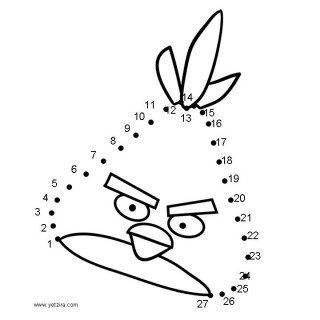

חבר את הנקודות
אחד הנושאים שנגענו בו בסמסטר א בקורס עיצוב גרפי הוא
עניין הוקטורים כיצד ליצור צורה בעזרת כלים וקטוריים
אחת המטלות הייתה לקחת תמונה של חיבור נקודות ולתת לה את העיצוב שלנו
התמונה המקורית:

התוצאה :